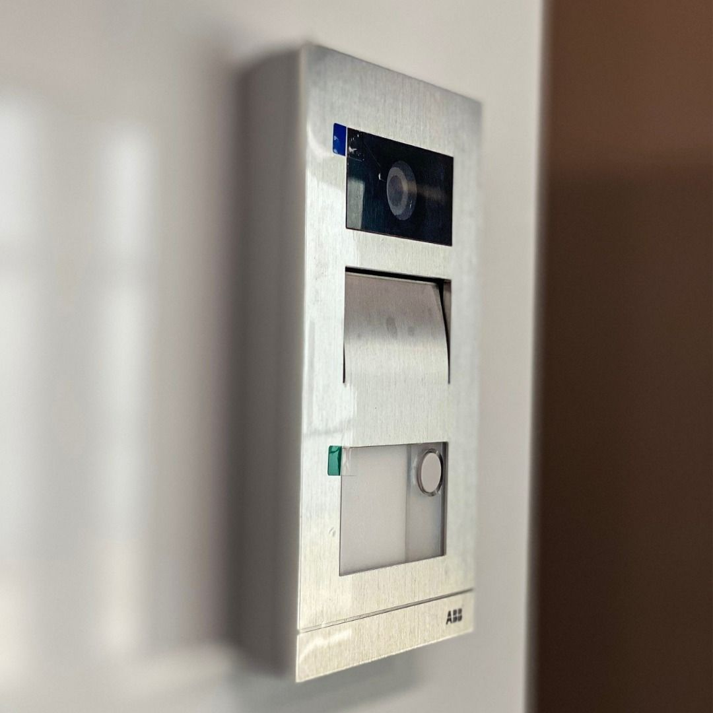
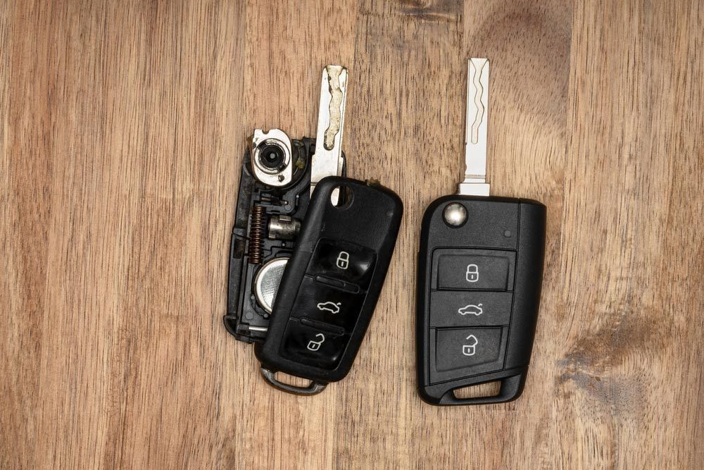
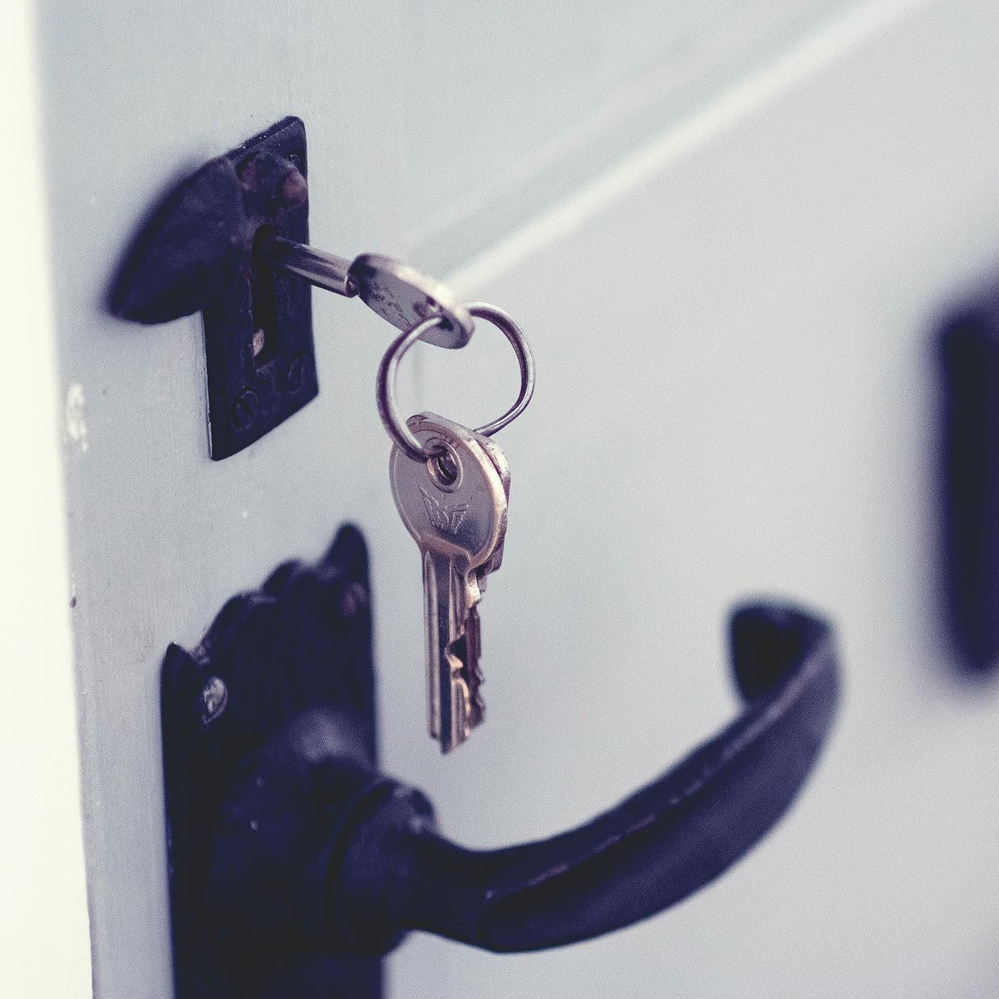

On this page
AT A GLANCE
At SPL Security Solutions, we pride ourselves on delivering professional 24/7 mobile locksmith services across Biggera Waters.
Get A Free Quote Now!
Thank you for contacting SPL Security Solutions.
We will be in touch soon.

Mobile Locksmiths Biggera Waters
At SPL Security Solutions, we pride ourselves on delivering professional 24/7 mobile locksmith services across Biggera Waters. Whether you’re upgrading your home’s locks, need quick assistance with a vehicle lockout, or want to enhance your commercial security, our team is here to help.
Our mobile locksmiths come equipped with state-of-the-art tools and a wide range of lock and key components, allowing us to provide comprehensive solutions directly on-site. From securing new properties to troubleshooting advanced security systems, we’re dedicated to meeting your unique needs with speed and reliability.
Call us on (07) 5588 8111 to learn how we can bring professional locksmith services to your doorstep.
Our residential locksmith services in Biggera Waters are designed to provide peace of mind for homeowners. We install, repair and upgrade locks to meet modern security standards, including smart locks and custom solutions for enhanced safety.
We offer commercial locksmith services in Biggera Waters, delivering tailored security measures such as electronic access control, master key systems and high-security lock installations. Our services are built to protect your assets while providing smooth access for authorised personnel.
Our automotive locksmith services in Biggera Waters cover all vehicle security needs, from resolving lockouts to programming transponder keys and fixing ignition problems. We handle a wide range of car makes and models with precision and efficiency.
Our restricted key systems in Biggera Waters are perfect for maintaining control over who has access to your property. These systems prevent unauthorised duplication and are ideal for both residential and commercial environments.
We provide expert safe services in Biggera Waters, covering installation, unlocking and maintenance. Choose from a variety of safes, including wall safes, floor safes, digital safes and deposit safes, for secure and accessible storage.
Our security systems in Biggera Waters integrate CCTV cameras, motion sensors and advanced alarms for a comprehensive defence against threats. These systems can be enhanced with remote access and mobile app integration for maximum control.
Our lock hardware services in Biggera Waters include tamper-proof locks, high-security deadbolts and innovative smart locks. Each lock is carefully selected and installed to meet the unique requirements of your property.
Upgrade your property’s doors with high-quality hardware in Biggera Waters. From durable hinges to sleek handles and efficient sliding door mechanisms, we provide solutions that enhance functionality and design.
We provide top-quality fire-rated door hardware, efficient closers, and stylish handles, enhancing both traditional and modern architectural aesthetics in Biggera Waters.
Emergency Locksmith Services Biggera Waters
There’s no predicting when you’ll face a lock-related emergency, but our team is ready to assist in a variety of situations:
- For homeowners
Misplacing your keys or encountering a broken lock at an inconvenient time can leave you feeling stranded. We offer fast access solutions and reliable repairs to restore your security without unnecessary delays. - For business owners
Faulty access control systems, broken locks, or office lockouts can slow down operations. Our team quickly addresses these issues to minimise interruptions and maintain the security of your premises. - For vehicle owners
Struggling with a car lockout, a malfunctioning transponder or a broken ignition? We deliver prompt on-site solutions like key replacements, programming, and ignition repairs to get you moving again.

Contact Details
24/7 Emergency Locksmiths or Security Tech


Trading Hours
Retail Shop

Frequently Asked Questions
-
Can I replace my car keys if I’ve lost the only copy?
Yes, a professional locksmith can create a replacement key even if you’ve lost the original. Using specialised tools and programming equipment, we can cut and program a new key, including transponders and fobs, on-site.
-
What should I consider when installing a safe?
When installing a safe, consider its intended use, size, and type—such as wall safes, floor safes, or digital models. Placement is also key; bolting the safe to a secure surface ensures maximum protection against theft or tampering.
Locksmith & Security Solutions Gold Coast, Brisbane & Northern NSW